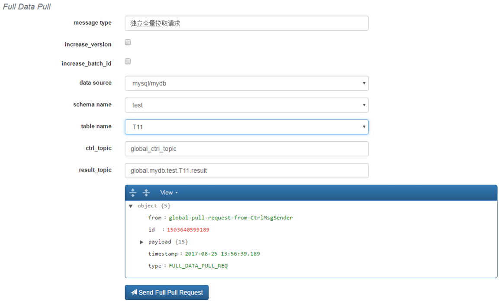
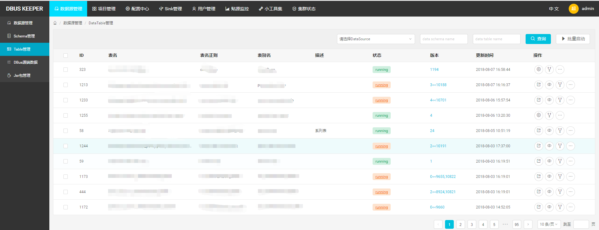

Dbus 概览
欢迎来到DBus帮助文档，您可以从以下信息中找到相关说明。或者从 FAQ找到解决常见问题的方案。
1 背景
企业中大量业务数据保存在各个业务系统数据库中，过去通常的同步数据的方法有很多种，比如：
- 各个数据使用方在业务低峰期各种抽取所需数据（缺点是存在重复抽取而且数据不一致）
- 由统一的数仓平台通过sqoop到各个系统中抽取数据（缺点是sqoop抽取方法时效性差，一般都是T+1的时效性）
- 基于trigger或时间戳的方式获得增量的变更（缺点是对业务方侵入性大，带来性能损失等）
这些方案都不能算完美，我们在了解和考虑了不同实现方式后，认为要想同时解决数据一致性和实时性，比较合理的方法应该是基于日志的解决方案，同时能够提供消息订阅的方式给下游系统使用。
DBus（数据总线）项目就是应这个需求而生的， DBus专注于数据的收集及实时数据流计算，通过简单灵活的配置，无侵入的方式对源端数据进行采集，采用高可用的流式计算框架，对公司各个IT系统在业务流程中产生的数据进行汇聚，经过处理后转换成统一JSON的数据格式UMS，提供给不同下游客户订阅和消费，充当报表数据源、大数据分析数据源等。 目前DBus在公司内部广泛使用，支持oracle，mysql，log, RocketMQ等数据源，这次开源版本支持mysql数据源。
DBus的主要潜在客户包括：
- 数仓平台和数据分析平台
- 实时营销决策
- 实时报表展示
- 异构数据实时同步
- 其他实时性要求高的系统
2 项目介绍
- 项目名称：DBus 数据总线
- 语言：java/js
专注于数据的收集及实时数据流计算，通过简单灵活的配置，以无侵入的方式对源端数据进行采集，采用高可用的流式计算框架，对公司各个IT系统在业务流程中产生的数据进行汇聚，经过转换处理后成为统一JSON的数据格式（UMS），提供给不同数据使用方订阅和消费，充当数仓平台、大数据分析平台、实时报表和实时营销等业务的数据源。
3 快速开始
全套DBus包含诸多组件(Canal，zk，kafka，storm，mysql，influxdb，grafana)，为了简单化，我们准备了All in One 包，包含了预先安装数据和一键启动脚本， 用于快速尝试。 请参考 Quick Start
4 系统架构和工作原理
大体来说分为2部分：
- 读取RDBMS增量日志的方式来 实时获取增量数据日志，并支持全量拉取；
- 基于logtash，flume，filebeat等抓取工具来实时获得数据，以可视化的方式对数据进行结构化输出；
以下为具体实现原理 
主要模块如下：
- 日志抓取模块：从RDBMS的备库中读取增量日志，并实时同步到kafka中；
- 增量转换模块：将增量数据实时转换为UMS数据，处理schema变更，脱敏等；
- 全量抽取程序：将全量数据从RDBMS备库拉取并转换为UMS数据；
- 日志算子处理模块：将来自不同抓取端的日志数据按照算子规则进行结构化处理；
- 心跳监控模块：对于RDMS类源，定时向源端发送心跳数据，并在末端进行监控，发送预警通知；对于日志类，直接在末端监控预警。
- web管理模块：管理所有相关模块。
具体参考：system architecture
5 主要功能：
- 无侵入方式接入多种数据源： 业务系统无需任何修改，以无侵入性读取数据库系统的日志获得增量数据实时变化。目前RDBMS支持mysql，oracle数据源（Oracle数据源请参考Oracle相关协议）， 日志方面支持基于logstash，flume和filebeat的多种数据日志抽取方案。
- 海量数据实时传输： 使用基于Storm的流式计算框架，秒级延时，整体无单点保证高可用性。
- 感知源端schema变更： 当源端发生schema变更时，能自动感知schema变化，调整UMS版本号，并通过Kafka消息和邮件通知下游

- 数据实时脱敏： 可根据需求对指定列数据进行实时脱敏。脱敏策略包括：直接替换、MD5、murmur等脱敏算法，脱敏加盐，正则表达式替换等。

- 初始加载和独立加载： 支持高效的初始化加载和重新加载。支持指定输出topic及是否升版本号等，独立拉取全量数据，灵活应对客户需求。 
- 统一标准化消息传输协议： 使用统一的UMS(JSON格式)消息schema格式输出便于消费，提供数据线级ums_id保证数据顺序性,输出insert,Update(before/after),Delete event数据。

- 可靠多路消息订阅分发： 使用Kafka存储和传递消息保证可靠性和便捷的多用户订阅
- 实时监控&预警： 可视化监控系统能随时查看各数据线实时流量和延时状况；当数据线发生异常时，根据配置策略自动发邮件或短信通知相关负责人

- 可视化后台管理系统： 提供一键部署上线，提供丰富的后台管理功能，用户可便捷地对数据线进行配置和管理。 
- 支持分表数据汇集： 可根据用户需求将不同的分表的数据汇集到一个“逻辑表”

6 其他
编译代码
关于编译代码，参考 compile
版本相关:
建议版本：0.4.0
下载发布包：请参考：downloads
版权声明
DBus 自身使用 Apache v2.0 协议
关于DBus 自身协议，修改第三方包代码，以及三方包协议参考： License
其他相关资料:
与开源项目 Wormhole 项目搭配使用将是最佳选择。
交流和问题反馈:
邮件交流： bridata@126.com
提交issue ： issue